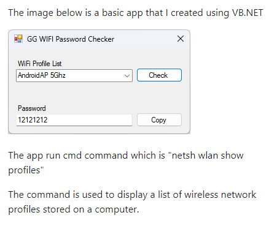
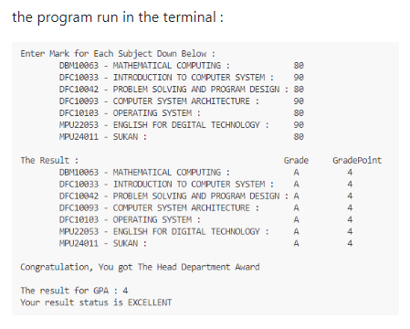
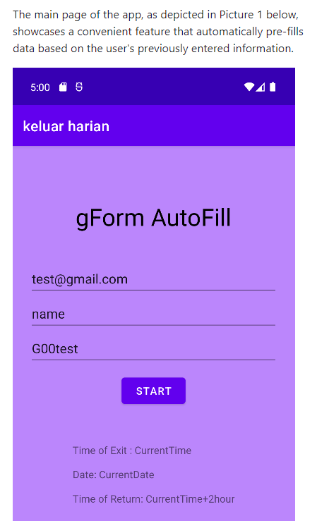
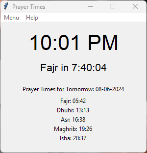

Showcasing My
The Wifi Key Viewer is a Windows application developed in Visual Basic that allows users to view saved Wi-Fi passwords on their system. It offers a user-friendly interface for retrieving and displaying passwords stored
The GPA Calculator is a command-line application developed in C++ that helps students calculate their Grade Point Average (GPA) based on their course grades. It provides an accurate GPA calculation.
gForm Prefilled is an Android application built using Android Studio that automates the process of filling out Google Forms. It saves time and effort by pre-filling forms with user-specific information.
The Prayer Time Clock is a Python application that calculates and displays prayer times for users based on their geographic location. It provides reminders and notifications for prayer times throughout the day.
